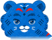
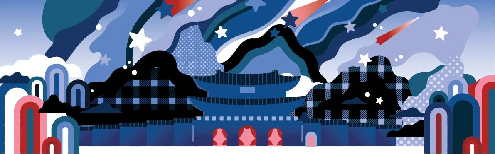
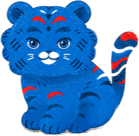
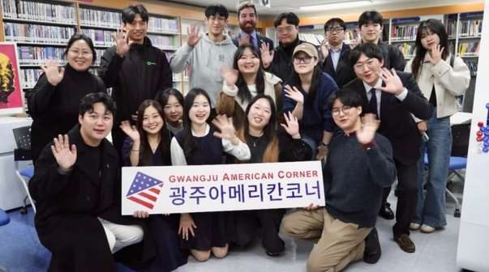
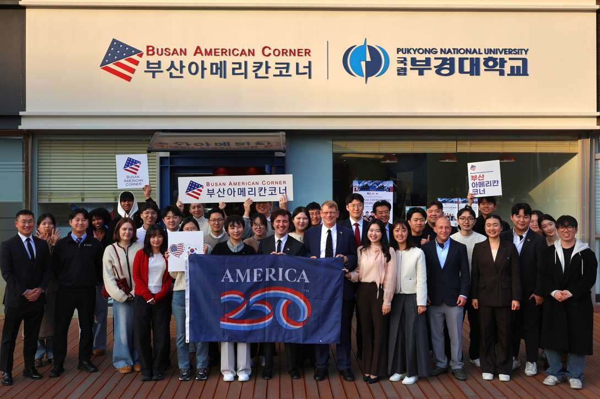
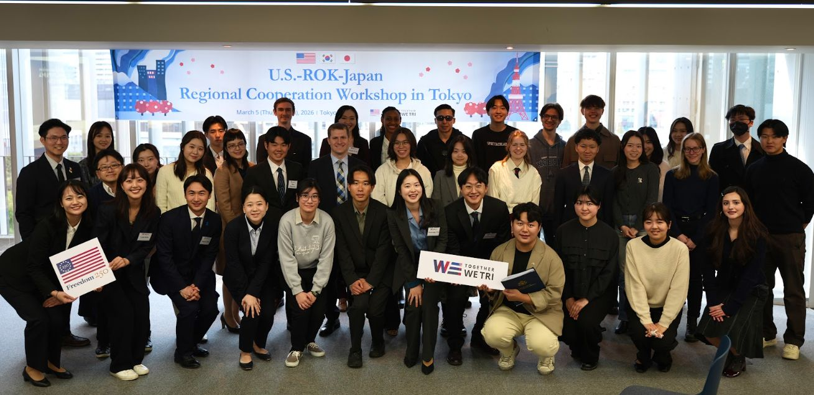
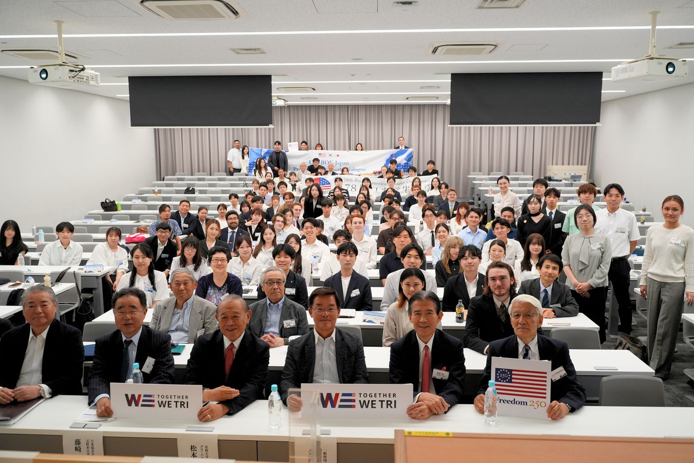
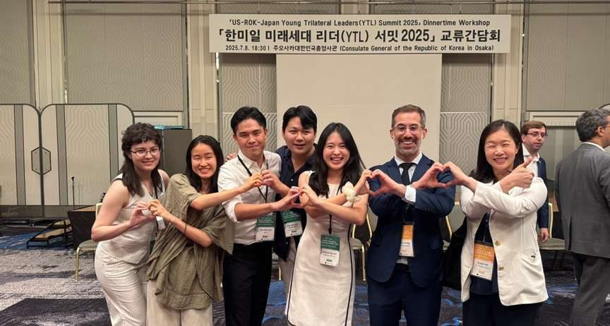
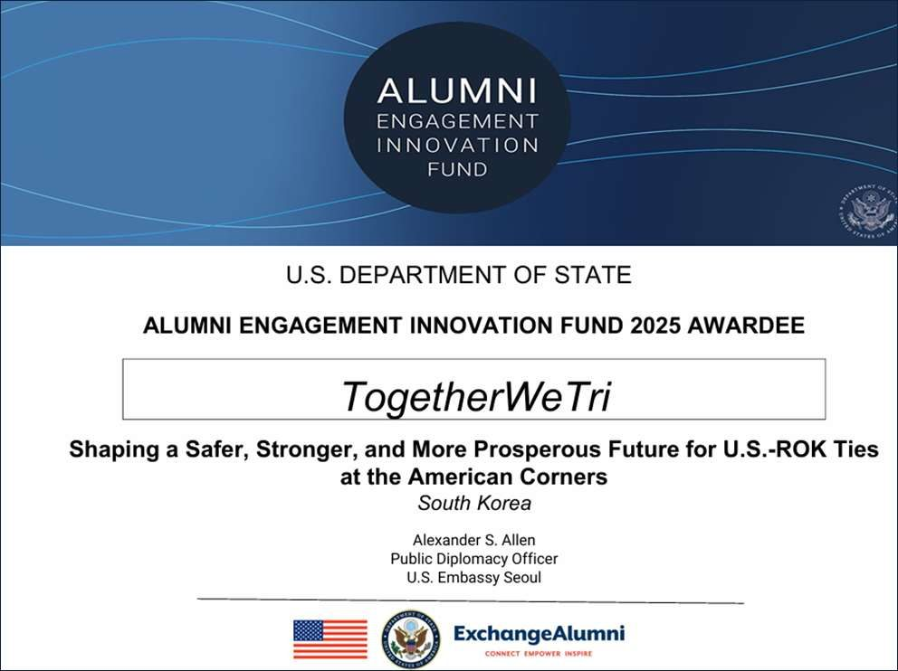
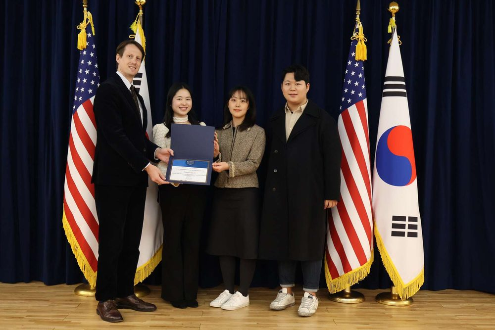

Bridging the U.S., the ROK and Japanthrough public diplomacyパブリック・ディプロマシーで、日米韓をつなぐ공공외교로한·미·일을 잇다
TogetherWeTri is a youth initiative founded in 2025 by alumni of the U.S.–ROK–Japan Young Trilateral Leaders (YTL) Summit. With branches in Korea and Japan, we turn trilateral dialogue into youth-led action that lasts beyond a single summit.TogetherWeTriは、日米韓ヤング・リーダーズ・サミット（Young Trilateral Leaders Summit：YTL）の修了生が2025年に立ち上げたユース・イニシアティブです。韓国と日本に支部を置き、三か国の対話を、一度きりのサミットで終わらない若者主導のアクションへとつなげています。TogetherWeTri는 한미일 미래세대 리더 서밋(Young Trilateral Leaders Summit, YTL) 수료생들이 2025년에 시작한 청년 이니셔티브입니다. 한국과 일본에 지부를 두고, 한미일 대화를 한 번의 서밋으로 끝나지 않는 청년 주도의 실천으로 이어가고 있습니다.
How can we sustain this trilateral dialogue beyond a single summit?一度きりのサミットを超えて、三国間の対話をどう持続させるか？한 번의 서밋을 넘어, 한미일 대화를 어떻게 이어갈 수 있을까?
Since the 2023 Camp David Summit, the three governments have reaffirmed trilateral cooperation again and again, but most of it still happens in high-level government dialogue. We build the people-to-people ties underneath it: trust among young people that holds regardless of which administration is in office.2023年のキャンプ・デービッド首脳会談以降、三か国の政府は日米韓協力の重要性を繰り返し確認してきました。しかしその多くは、いまも政府間のハイレベルな対話にとどまっています。私たちは、その下に人と人とのつながりを築きます。政権が変わっても揺らがない、若者同士の信頼です。2023년 캠프 데이비드 정상회의 이후 세 나라 정부는 한미일 협력의 중요성을 거듭 확인해 왔습니다. 하지만 그 대부분은 여전히 정부 간 고위급 대화에 머물러 있습니다. 우리는 그 아래에서 사람과 사람을 잇습니다. 정부가 바뀌어도 흔들리지 않는 청년 간의 신뢰입니다.
Translating government-to-government dialogue into youth-led projects, events and actions.政府間の対話を、若者主導のプロジェクト・イベント・行動へとつなげます。정부 간 대화를 청년 주도의 프로젝트, 행사, 실천으로 연결합니다.
Value two私たちが大切にすること 2우리가 지키는 가치 2
A network of trust信頼のネットワーク신뢰의 네트워크
Lasting ties among next-generation leaders that are not swayed by political circumstances.政治状況に左右されない、次世代リーダー同士の持続的なつながりを育てます。정치적 상황에 흔들리지 않는 차세대 리더 간의 지속적인 관계를 키웁니다.
Our impact in action活動の成果활동 성과
Let's do it together一緒にやりましょう같이 합시다
같이 합시다 · 一緒にやりましょう · Let's do it together
6
Regional cooperation roundtables地域協力ラウンドテーブル지역 협력 라운드테이블
Expanding dialogue across cities and sectors in Korea and Japan.韓国と日本で、都市・分野を越えて対話を広げました。한국과 일본에서 도시와 분야를 넘어 대화를 넓혔습니다.
500+
Youth and university students engaged参加した若者・大学生참여한 청년·대학생
From diverse academic backgrounds.多様な学問分野から参加しました。다양한 전공 분야에서 참여했습니다.
Our branches支部지부
Three countries, one network三つの国、一つのネットワーク세 나라, 하나의 네트워크


KOREA · 한국

Since 20252025年〜2025년부터
Korea Branch韓国支部한국 지부
Where TogetherWeTri began. From August 2025 to September 2026, the Korea Branch carried out an AEIF-funded project, including regional cooperation roundtables at American Corners.TogetherWeTriが始まった場所です。2025年8月から2026年9月まで、AEIFの助成を受けたプロジェクトを実施し、アメリカン・コーナーでの地域協力ラウンドテーブルなどを開催しました。TogetherWeTri가 시작된 곳입니다. 2025년 8월부터 2026년 9월까지 AEIF 지원 프로젝트를 수행하며, 아메리칸 코너에서 지역 협력 라운드테이블 등을 개최했습니다.
Dialogues, regional projects and a newsletter that bring trilateral cooperation to young people across Japan.日本各地の若者に日米韓協力を届ける、ダイアローグ、地域プロジェクト、ニュースレターを展開しています。일본 각지의 청년들에게 한미일 협력을 전하는 대화 세션, 지역 프로젝트, 뉴스레터를 운영하고 있습니다.
We are preparing a branch in the United States. YTL alumni and students in the U.S. who want to help launch it are welcome.米国での支部立ち上げを準備しています。立ち上げに関わりたい米国在住のYTL修了生・学生を歓迎します。미국 지부 출범을 준비하고 있습니다. 함께 만들어 갈 미국의 YTL 수료생과 학생을 환영합니다.
Join the next generation of trilateral leaders日米韓の次世代リーダーの輪に加わろう한미일 차세대 리더와 함께하세요
Come to an event, join a branch, or partner with us on a project in your community.イベントへの参加、支部での活動、地域での連携など、関わり方はさまざまです。행사 참여, 지부 활동, 지역 협력 등 다양한 방법으로 함께할 수 있습니다.
A youth network for U.S.–ROK–Japan cooperation日米韓協力のためのユース・ネットワーク한미일 협력을 위한 청년 네트워크
Who we are, how our journey began, and what we have done so far.私たちが何者で、どのように歩んできたのか。これまでの活動を紹介します。우리가 누구인지, 어떻게 시작했는지, 그리고 지금까지의 활동을 소개합니다.
Our goals事業の目標사업 목표
Two lasting values we aim to leave behind社会に残したい、二つの価値사회에 남기고 싶은 두 가지 가치
TogetherWeTri works toward two goals that outlast any single event or administration.TogetherWeTriは、一度きりのイベントや特定の政権を超えて続く、二つの目標に取り組んでいます。TogetherWeTri는 한 번의 행사나 특정 정부를 넘어 이어지는 두 가지 목표를 향해 활동합니다.
Goal one目標 1목표 1
A platform for practice実践のためのプラットフォーム실천의 플랫폼
Translating government-to-government dialogue into youth-led projects, events and actions.政府間の対話を、若者主導のプロジェクト・イベント・行動へとつなげます。정부 간 대화를 청년 주도의 프로젝트, 행사, 실천으로 연결합니다.
Goal two目標 2목표 2
A network of trust信頼のネットワーク신뢰의 네트워크
Lasting ties among next-generation leaders that are not swayed by political circumstances.政治状況に左右されない、次世代リーダー同士の持続的なつながりを育てます。정치적 상황에 흔들리지 않는 차세대 리더 간의 지속적인 관계를 키웁니다.
Background設立の背景설립 배경
Closing the gap between summits and society首脳会談と社会のあいだのギャップを埋める정상회의와 사회 사이의 간극을 메우다

Gwangju · Nov 2025光州・2025年11月광주 · 2025년 11월

Busan · Dec 2025釜山・2025年12月부산 · 2025년 12월

Tokyo · Mar 2026東京・2026年3月도쿄 · 2026년 3월

Tokyo · Jun 2026東京・2026年6月도쿄 · 2026년 6월
TogetherWeTri is an initiative launched in Korea in 2025 by alumni of the U.S.–ROK–Japan Young Trilateral Leaders (YTL) Summit. From August 2025 to September 2026, the Korea Branch carried out a project with seed funding from the U.S. Department of State's Alumni Engagement Innovation Fund (AEIF). The Japan Branch began its activities in March 2026.TogetherWeTriは、日米韓ヤング・リーダーズ・サミット（Young Trilateral Leaders Summit：YTL）の修了生が、2025年に韓国で立ち上げたイニシアティブです。韓国支部は、米国国務省の同窓生エンゲージメント・イノベーション基金（AEIF）のシード資金を受け、2025年8月から2026年9月までプロジェクトを実施しました。日本支部は2026年3月に活動を開始しました。TogetherWeTri는 한미일 미래세대 리더 서밋(Young Trilateral Leaders Summit, YTL) 수료생들이 2025년 한국에서 시작한 이니셔티브입니다. 한국 지부는 미국 국무부 동문 참여 혁신 기금(AEIF)의 시드 펀딩을 받아 2025년 8월부터 2026년 9월까지 프로젝트를 수행했습니다. 일본 지부는 2026년 3월부터 활동을 시작했습니다.
Since the 2023 Camp David Summit, successive Japan–U.S. and Japan–ROK joint statements and summit meetings have consistently identified the advancement of trilateral economic security and cooperation on advanced technology as a top shared priority among the three countries.2023年のキャンプ・デービッド首脳会談以降、日米・日韓の共同声明や首脳会談では、日米韓の経済安全保障と先端技術協力の推進が、三か国共通の最重要課題として一貫して位置づけられてきました。2023년 캠프 데이비드 정상회의 이후 미일·한일 공동성명과 정상회담에서는 한미일 경제안보와 첨단기술 협력 강화가 세 나라 공통의 최우선 과제로 일관되게 제시되어 왔습니다.
At the same time, as instability in the security, economic and technology domains of the Indo-Pacific grows, trilateral cooperation has remained concentrated at the level of high-level government dialogue. A structural gap persists in translating these achievements into concrete action at the level of young people and local communities.一方で、インド太平洋地域の安全保障・経済・技術の各分野で不安定さが増すなか、日米韓協力は政府間の高官レベルの対話に集中しており、その成果を若者や地域社会のレベルで具体的な行動へとつなげるうえで、構造的なギャップが残っています。한편 인도·태평양 지역의 안보·경제·기술 분야에서 불안정성이 커지는 가운데, 한미일 협력은 정부 간 고위급 대화에 집중되어 있으며, 그 성과를 청년과 지역사회 차원의 구체적인 행동으로 연결하는 데에는 구조적인 간극이 남아 있습니다.
Precisely because political uncertainty is increasing, trust-based relationships among young people and private-sector cooperative networks, ones that do not depend on the direction of any particular administration, have become all the more essential.政治的な不確実性が高まっているからこそ、特定の政権の方針に左右されない、若者同士の信頼関係と民間の協力ネットワークがいっそう重要になっています。정치적 불확실성이 커지고 있기에, 특정 정부의 방향에 좌우되지 않는 청년 간의 신뢰 관계와 민간 협력 네트워크가 더욱 중요해지고 있습니다.
With this challenge in mind, TogetherWeTri aims to leave behind two lasting values for society: first, a platform that translates government-to-government dialogue into youth-led practice; and second, a network of trust among next-generation leaders that is not swayed by political circumstances.この課題意識のもと、TogetherWeTriは社会に二つの価値を残すことを目指しています。第一に、政府間の対話を若者主導の実践へとつなげるプラットフォーム。第二に、政治状況に左右されない次世代リーダーの信頼のネットワークです。이러한 문제의식 아래 TogetherWeTri는 사회에 두 가지 가치를 남기고자 합니다. 첫째, 정부 간 대화를 청년 주도의 실천으로 연결하는 플랫폼. 둘째, 정치적 상황에 흔들리지 않는 차세대 리더 간의 신뢰 네트워크입니다.
How we got hereこれまでの歩み지금까지의 여정
Turning ideas into actionアイデアを、アクションへ아이디어를 실천으로
How can we sustain this trilateral dialogue beyond a single summit?一度きりのサミットを超えて、三国間の対話をどう持続させるか？한 번의 서밋을 넘어, 한미일 대화를 어떻게 이어갈 수 있을까?
This question is at the heart of TogetherWeTri: bridging the U.S., the ROK and Japan through public diplomacy.この問いが、TogetherWeTriの活動の中心にあります。パブリック・ディプロマシーを通じて、日米韓をつなぎます。이 질문이 TogetherWeTri 활동의 중심에 있습니다. 공공외교를 통해 한미일을 잇습니다.
August 18, 20232023年8月18日2023년 8월 18일
Camp David Summitキャンプ・デービッド首脳会談캠프 데이비드 정상회의
The leaders of the United States, the ROK and Japan hold their first standalone trilateral summit and set a framework for regular cooperation.日米韓の首脳が初の単独での三か国首脳会談を開催し、定期的な協力の枠組みを打ち出しました。한미일 정상이 첫 단독 3국 정상회의를 열고 정례적인 협력의 틀을 마련했습니다.
July 2024 · Busan2024年7月・釜山2024년 7월 · 부산
Young Trilateral Leaders Summit in Busan日米韓ヤング・リーダーズ・サミット（釜山）한미일 미래세대 리더 서밋 (부산)
Young leaders from the three countries gather for the YTL Summit in Busan, Korea.三か国の若いリーダーが、韓国・釜山でのYTLサミットに集まりました。세 나라의 청년 리더들이 부산에서 열린 YTL 서밋에 모였습니다.
July 2025 · Osaka2025年7月・大阪2025년 7월 · 오사카
Young Trilateral Leaders Summit in Osaka日米韓ヤング・リーダーズ・サミット（大阪）한미일 미래세대 리더 서밋 (오사카)
The YTL Summit is held in Osaka, Japan.YTLサミットが大阪で開催されました。YTL 서밋이 일본 오사카에서 열렸습니다.

2025
TogetherWeTri launches in KoreaTogetherWeTri、韓国で始動TogetherWeTri, 한국에서 출범
Alumni of the YTL Summit start the initiative in Korea.日米韓ヤング・リーダーズ・サミット（YTL）の修了生が、韓国でイニシアティブを立ち上げました。YTL 서밋 수료생들이 한국에서 이니셔티브를 시작했습니다.
August 2025 – September 20262025年8月〜2026年9月2025년 8월 ~ 2026년 9월
AEIF-funded project in Korea韓国支部によるAEIF助成プロジェクト한국 지부의 AEIF 지원 프로젝트
The Korea Branch carries out a project with seed funding from the U.S. Department of State's Alumni Engagement Innovation Fund (AEIF), including regional cooperation roundtables in Korea and Japan.韓国支部が、米国国務省の同窓生エンゲージメント・イノベーション基金（AEIF）のシード資金を受け、韓国と日本での地域協力ラウンドテーブルなどのプロジェクトを実施しました。한국 지부가 미국 국무부 동문 참여 혁신 기금(AEIF)의 시드 펀딩을 받아 한국과 일본에서 지역 협력 라운드테이블 등의 프로젝트를 수행했습니다.
Japan Branch begins activities日本支部、活動開始일본 지부 활동 시작
The Japan Branch starts building the network in Japan through events, regional projects and a newsletter.日本支部が、イベント、地域プロジェクト、ニュースレターを通じて日本でのネットワークづくりを始めました。일본 지부가 행사, 지역 프로젝트, 뉴스레터를 통해 일본에서 네트워크를 만들기 시작했습니다.
Meet Hanul, Hank and Haruハヌル、ハンク、ハルを紹介します하늘, 행크, 하루를 소개합니다
HanulKorea韓国한국
HankUnited States米国미국
HaruJapan日本일본
Get involved参加する함께하기
Join the next generation of trilateral leaders日米韓の次世代リーダーの輪に加わろう한미일 차세대 리더와 함께하세요
Come to an event, join a branch, or partner with us on a project in your community.イベントへの参加、支部での活動、地域での連携など、関わり方はさまざまです。행사 참여, 지부 활동, 지역 협력 등 다양한 방법으로 함께할 수 있습니다.
Alumni Engagement Innovation Fund同窓生エンゲージメント・イノベーション基金동문 참여 혁신 기금
Our AEIF project: connecting young trilateral leadersAEIF採択事業：若き日米韓リーダーをつなぐAEIF 사업: 한미일 청년 리더를 잇다
From August 2025 to September 2026, the Korea Branch carried out a U.S. Department of State Alumni Engagement Innovation Fund project. Here is what it set out to do and what it achieved.2025年8月から2026年9月まで、韓国支部が米国国務省の同窓生エンゲージメント・イノベーション基金（AEIF）の事業を実施しました。事業の目標と成果を紹介します。2025년 8월부터 2026년 9월까지 한국 지부가 미국 국무부 동문 참여 혁신 기금(AEIF) 사업을 수행했습니다. 사업의 목표와 성과를 소개합니다.
Alumni Engagement Innovation Fund同窓生エンゲージメント・イノベーション基金동문 참여 혁신 기금
AEIF awardee, 2025–26AEIF 採択事業（2025〜26年）AEIF 선정 사업 (2025–26)
TogetherWeTri was named an Alumni Engagement Innovation Fund 2025 awardee by the U.S. Department of State for the project “Shaping a Safer, Stronger, and More Prosperous Future for U.S.-ROK Ties at the American Corners.” The Korea Branch carried out the project from August 2025 to September 2026.TogetherWeTriは、米国国務省の同窓生エンゲージメント・イノベーション基金（AEIF）2025年度の採択団体に選ばれました。事業名は「Shaping a Safer, Stronger, and More Prosperous Future for U.S.-ROK Ties at the American Corners」です。韓国支部が、2025年8月から2026年9月まで事業を実施しました。TogetherWeTri는 미국 국무부 동문 참여 혁신 기금(AEIF) 2025년 선정 단체로 뽑혔습니다. 사업명은 “Shaping a Safer, Stronger, and More Prosperous Future for U.S.-ROK Ties at the American Corners”이며, 한국 지부가 2025년 8월부터 2026년 9월까지 사업을 수행했습니다.
U.S. Department of State AEIF grant米国国務省 AEIF助成額미국 국무부 AEIF 지원금$58,000
Project goals事業の目標사업 목표
Connecting young trilateral leaders若き三国間リーダーをつなぐ젊은 한미일 리더를 잇다
Strengthening U.S.–ROK–Japan youth networks日米韓の若者ネットワークを強化する한미일 청년 네트워크를 강화하다
Building a sustainable trilateral dialogue platform持続可能な三国間対話の場をつくる지속 가능한 한미일 대화의 장을 만들다


Our impact in action活動の成果활동 성과
Let's do it together一緒にやりましょう같이 합시다
같이 합시다 · 一緒にやりましょう · Let's do it together
6
Regional cooperation roundtables地域協力ラウンドテーブル지역 협력 라운드테이블
Expanding dialogue across cities and sectors in Korea and Japan.韓国と日本で、都市・分野を越えて対話を広げました。한국과 일본에서 도시와 분야를 넘어 대화를 넓혔습니다.
500+
Youth and university students engaged参加した若者・大学生참여한 청년·대학생
From diverse academic backgrounds.多様な学問分野から参加しました。다양한 전공 분야에서 참여했습니다.
Grant助成額지원금$58,000
Period期間기간Aug 2025 – Sep 20262025年8月〜2026年9月2025년 8월 ~ 2026년 9월
Carried out by実施수행TogetherWeTri Korea BranchTogetherWeTri 韓国支部TogetherWeTri 한국 지부
Cities開催地개최지Gwangju · Busan · Tokyo光州・釜山・東京광주 · 부산 · 도쿄
Regional cooperation roundtables地域協力ラウンドテーブル지역 협력 라운드테이블
Six roundtables across Korea and Japan韓国と日本で開いた6つのラウンドテーブル한국과 일본에서 열린 6개의 라운드테이블
Expanding dialogue across cities and sectors, with youth and university students from diverse academic backgrounds.都市や分野を越えて対話を広げ、多様な学問分野の若者・大学生が参加しました。도시와 분야를 넘어 대화를 넓히며, 다양한 전공의 청년과 대학생이 참여했습니다.
Gwangju · November 2025光州・2025年11月광주 · 2025년 11월
Regional roundtable at the Gwangju American Corner光州アメリカン・コーナーでの地域ラウンドテーブル광주 아메리칸 코너 지역 라운드테이블
Students and young people in Gwangju explore U.S.–ROK–Japan cooperation at the Gwangju American Corner.光州の学生・若者が、光州アメリカン・コーナーで日米韓協力について話し合いました。광주의 학생과 청년들이 광주 아메리칸 코너에서 한미일 협력에 대해 논의했습니다.
Regional roundtable at the Busan American Corner, Pukyong National University釜山アメリカン・コーナー（国立釜慶大学校）での地域ラウンドテーブル부산 아메리칸 코너(국립부경대학교) 지역 라운드테이블
The roundtable series continues in Busan, bringing local students into the trilateral conversation.ラウンドテーブルは釜山へ。地元の学生が日米韓の対話に加わりました。라운드테이블은 부산으로 이어져, 지역 학생들이 한미일 대화에 함께했습니다.
YTL U.S.–ROK–Japan Cooperation Dialogue in TokyoYTL 日米韓協力ダイアローグ in 東京YTL 한미일 협력 대화 in 도쿄
80+ participants参加者80名以上참가자 80명 이상
At Lakeland University Japan, a hybrid dialogue on the role of youth and next-generation leadership in sustaining trilateral cooperation.レイクランド大学ジャパンで、日米韓協力を持続させる若者・次世代リーダーの役割について、ハイブリッド形式で議論しました。레이크랜드 대학교 재팬에서 한미일 협력을 이어갈 청년과 차세대 리더의 역할을 하이브리드 형식으로 논의했습니다.
Trilateral Sports Diplomacy Dialogue in Tokyo日米韓スポーツ外交ダイアローグ in 東京한미일 스포츠 외교 대화 in 도쿄
40+ participants参加者40名以上참가자 40명 이상
Connecting past and upcoming Olympic host cities in the three countries, the dialogue explored sports as a practical platform for trilateral cooperation.三か国の過去・将来のオリンピック開催都市をつなぎ、スポーツを日米韓協力の実践的な場として考えました。세 나라의 과거·미래 올림픽 개최 도시를 연결하며, 스포츠를 한미일 협력의 실천적인 장으로 살펴보았습니다.
Tokyo · June 12–13, 2026東京・2026年6月12〜13日도쿄 · 2026년 6월 12~13일
#Now It Is Your Turn: Counterspeech Co-creation Seminar#Now It Is Your Turn：カウンタースピーチ共創セミナー#Now It Is Your Turn: 카운터스피치 공동 창작 세미나
YTL and Trilateral Teacher Training alumni visited Nikkei Inc. and co-created media literacy and counterspeech lessons for high school classrooms at Hosei University.YTLと日韓合同英語教員養成プログラム（TTT）の修了生が日本経済新聞社を訪問し、法政大学で高校向けのメディアリテラシー・カウンタースピーチ教材を共創しました。YTL과 TTT 수료생들이 니혼게이자이신문사를 방문하고, 호세이대학에서 고등학교용 미디어 리터러시·카운터스피치 교재를 함께 만들었습니다.
Tokyo · June 13, 2026東京・2026年6月13日도쿄 · 2026년 6월 13일
U.S.–ROK–Japan Professional × Youth Dialogue日米韓 プロフェッショナル × ユース・ダイアローグ한미일 프로페셔널 × 유스 대화
133 participants from 7 countries and regions参加者133名（7か国・地域）참가자 133명(7개 국가·지역)
Co-hosted with the Japan-America Student Conference (JASC), with keynotes from former ambassadors and practitioners and small-group discussions.日米学生会議（JASC）と共催。元大使や実務家による基調講演と、少人数のグループディスカッションを行いました。일미학생회의(JASC)와 공동 주최하여, 전직 대사와 실무자의 기조연설과 소그룹 토론을 진행했습니다.
Tokyo Trilateral Engagement Program東京トライラテラル・エンゲージメント・プログラム도쿄 한미일 교류 프로그램
Five days in Tokyo, March 4–8, 2026東京での5日間（2026年3月4〜8日）도쿄에서의 5일 (2026년 3월 4~8일)
The program expanded TogetherWeTri into Japan. Alongside two public dialogues, the team met diplomatic, policy, academic and civil-society partners to discuss priorities such as supply chain resilience, critical minerals and emerging technology, and to lay the groundwork for the Japan Branch.このプログラムで、TogetherWeTriの活動は日本へと広がりました。2つの公開ダイアローグに加え、外交・政策・学術・市民社会のパートナーと面会し、サプライチェーンの強靭化、重要鉱物、新興技術などの優先分野について意見を交わしながら、日本支部の土台をつくりました。이 프로그램을 통해 TogetherWeTri의 활동이 일본으로 확장되었습니다. 두 차례의 공개 대화와 함께 외교·정책·학계·시민사회 파트너를 만나 공급망 회복력, 핵심 광물, 신흥 기술 등 우선 분야를 논의하고, 일본 지부의 기반을 마련했습니다.
Join the next generation of trilateral leaders日米韓の次世代リーダーの輪に加わろう한미일 차세대 리더와 함께하세요
Come to an event, join a branch, or partner with us on a project in your community.イベントへの参加、支部での活動、地域での連携など、関わり方はさまざまです。행사 참여, 지부 활동, 지역 협력 등 다양한 방법으로 함께할 수 있습니다.
From summit statementsto youth-led action首脳間の対話を、若者の実践へ정상 간의 대화를,청년의 실천으로
TogetherWeTri was started in Korea in 2025 by alumni of the Japan–U.S.–Korea Young Trilateral Leaders (YTL) Summit. Active since March 2026, the Japan Branch connects students, young professionals and local communities in Japan with peers in the United States and Korea, and turns trilateral priorities into work people can join.TogetherWeTriは、日米韓ヤング・リーダーズ・サミット（Young Trilateral Leaders Summit：YTL）の修了生が2025年に韓国で立ち上げたイニシアティブです。2026年3月に活動を開始した日本支部は、日本の学生・若手社会人・地域社会を米国・韓国の仲間とつなぎ、日米韓協力の優先課題を誰もが参加できる活動へと落とし込みます。TogetherWeTri는 한미일 미래세대 리더 서밋(YTL) 수료생들이 2025년 한국에서 시작한 이니셔티브입니다. 2026년 3월 활동을 시작한 일본 지부는 일본의 학생·청년 직장인·지역사회를 미국·한국의 동료들과 연결하고, 한미일 협력의 우선 과제를 누구나 참여할 수 있는 활동으로 만들어 갑니다.
Four ways the Japan Branch works日本支部の4つの活動일본 지부의 네 가지 활동
Dialogues & workshops対話・ワークショップ대화·워크숍
Youth-led, youth-focused dialogue sessions exploring social, local, and global issues through a trilateral lens.社会・地域・国際課題などをテーマに、若者が企画し、若者が参加する日米韓の対話セッション。사회·지역·국제 과제 등을 주제로 청년이 기획하고 청년이 참여하는 한미일 대화 세션.
Regional projects地域プロジェクト지역 프로젝트
Bringing opportunities to explore Japan-U.S.-ROK cooperation through relatable topics to young people across Japan.全国各地の若者に、日米韓の協力を身近なテーマから考える機会を届けます。일본 각지의 청년들에게 한미일 협력을 친숙한 주제로 생각해 볼 기회를 전합니다.
Policy to practice政策から実践へ정책에서 실천으로
Making Japan-U.S.-ROK diplomatic and policy issues accessible and easy for young people to understand.日米韓の外交・政策課題を、若者にも分かりやすく解説します。한미일의 외교·정책 과제를 청년들도 이해하기 쉽게 풀어 설명합니다.
Peer networkピア・ネットワーク피어 네트워크
Connecting YTL alumni, students, and young professionals all over the globe with diverse interests and experiences.世界中にいる多様な関心や経験を持つYTL修了生、学生、若手社会人をつなぎます。다양한 관심과 경험을 가진 전 세계의 YTL 수료생, 학생, 청년 직장인을 연결합니다.
Highlights活動の様子활동 모습
Dialogues across Japan日本各地での対話일본 각지에서의 대화
From Tokyo to Sendai, the Japan Branch brings students, professionals and local partners together around trilateral cooperation.東京から仙台まで、日本支部は学生・社会人・地域のパートナーを、日米韓協力をテーマに結びつけています。도쿄에서 센다이까지, 일본 지부는 학생·직장인·지역 파트너를 한미일 협력이라는 주제로 연결하고 있습니다.
Join the next generation of trilateral leaders日米韓の次世代リーダーの輪に加わろう한미일 차세대 리더와 함께하세요
Come to an event, join the team, or partner with us on a project in your community.イベントへの参加、運営メンバーとしての活動、地域でのプロジェクト連携など、関わり方はさまざまです。행사 참여, 운영 멤버 활동, 지역 프로젝트 협력 등 다양한 방법으로 함께할 수 있습니다.
Dialogues, workshops and meetupsワークショップ、交流会대화, 워크숍, 교류회
Open to students and young professionals interested in Japan–U.S.–Korea cooperation. Each listing shows its language and format.日米韓協力に関心のある学生・若手社会人ならどなたでも参加できます。使用言語と開催形式は各イベントに記載しています。한미일 협력에 관심 있는 학생과 청년 직장인이라면 누구나 참여할 수 있습니다. 사용 언어와 진행 방식은 각 행사에 표시되어 있습니다.
Host with us共催のご相談공동 개최 문의
Bring a trilateral session to your campus or townあなたの大学や地域で、日米韓セッションを당신의 대학이나 지역에서 한미일 세션을
We co-organize events with student groups, universities and local organizations across Japan.全国の学生団体・大学・地域団体とイベントを共催しています。일본 각지의 학생 단체·대학·지역 단체와 함께 행사를 공동 개최하고 있습니다.
Newsletter issues, event recaps, explainers on trilateral policy, and stories from our members.ニュースレター、イベント報告、日米韓の政策解説、メンバーのストーリーを掲載しています。뉴스레터, 행사 보고, 한미일 정책 해설, 멤버 이야기를 전합니다.
Newsletterニュースレター뉴스레터
Get the Japan Branch newsletter日本支部のニュースレターを受け取る일본 지부 뉴스레터 받기
Event announcements, recaps and policy explainers in English and Japanese.イベント告知、活動報告、政策解説を英語と日本語でお届けします。행사 안내, 활동 보고, 정책 해설을 영어와 일본어로 전해 드립니다.
Our teamメンバー紹介멤버 소개
The people behind the Japan Branch日本支部のメンバー일본 지부 멤버
Templateテンプレート템플릿These profiles are placeholders. Replace them with your team's names, roles and photos.以下は仮のプロフィールです。メンバーの氏名・役職・写真に差し替えてください。아래는 임시 프로필입니다. 멤버의 이름·역할·사진으로 바꿔 주세요.
Join the team運営メンバー募集운영 멤버 모집
Join the Japan Branch team日本支部の運営メンバーになろう일본 지부 운영 멤버가 되어 주세요
Help plan events, write for the newsletter or run local projects.イベント企画、ニュースレター執筆、地域プロジェクトの運営に関わることができます。행사 기획, 뉴스레터 작성, 지역 프로젝트 운영에 참여할 수 있습니다.
Trilateral cooperation,rooted in our regions日米韓の協力を、地域から한미일 협력을,지역에서부터
TogetherWeTri began in Korea in 2025. The Korea Branch brings YTL alumni and local students together at American Corners outside Seoul, turning trilateral priorities into regional dialogue and policy ideas. From August 2025 to September 2026 it carried out a project funded by the U.S. Department of State's Alumni Engagement Innovation Fund (AEIF).TogetherWeTriは2025年に韓国で始まりました。韓国支部は、ソウル以外の各地のアメリカン・コーナーにYTL修了生と地元の学生を集め、日米韓協力の課題を地域の対話と政策アイデアへとつなげています。2025年8月から2026年9月までは、米国国務省の同窓生エンゲージメント・イノベーション基金（AEIF）の助成を受けた事業を実施しました。TogetherWeTri는 2025년 한국에서 시작되었습니다. 한국 지부는 서울 밖 여러 지역의 아메리칸 코너에서 YTL 수료생과 지역 학생들을 연결하고, 한미일 협력의 과제를 지역의 대화와 정책 아이디어로 이어 갑니다. 2025년 8월부터 2026년 9월까지 미국 국무부 동문 참여 혁신 기금(AEIF)의 지원을 받아 사업을 수행했습니다.
Workshops at American Corners outside Seoul where YTL alumni and local students discuss how their city can contribute to trilateral cooperation.ソウル以外のアメリカン・コーナーで、YTL修了生と地元の学生が、自分たちの街が日米韓協力にどう貢献できるかを話し合います。서울 밖의 아메리칸 코너에서 YTL 수료생과 지역 학생들이 우리 도시가 한미일 협력에 어떻게 기여할 수 있을지 논의합니다.
Policy proposals政策提言정책 제안
Participants draft policy proposals together, and each roundtable is summarized in a final report.参加者が一緒に政策提言をまとめ、各ラウンドテーブルの成果を最終報告書にまとめています。참가자들이 함께 정책 제안을 만들고, 각 라운드테이블의 성과를 최종 보고서로 정리합니다.
Local partnerships地域との連携지역 파트너십
Working with American Corners, universities and local media to reach young people in every region.アメリカン・コーナー、大学、地元メディアと連携し、各地の若者に参加の機会を届けます。아메리칸 코너, 대학, 지역 언론과 협력해 각 지역의 청년들에게 참여 기회를 전합니다.
Alumni network修了生ネットワーク수료생 네트워크
YTL alumni from Korea, the U.S. and Japan come back as speakers, panelists and organizers.韓国・米国・日本のYTL修了生が、登壇者・パネリスト・運営者として再び集まります。한국·미국·일본의 YTL 수료생들이 연사, 패널, 운영진으로 다시 모입니다.
Highlights活動の様子활동 모습
Roundtables across Korea韓国各地でのラウンドテーブル한국 각지의 라운드테이블
From Gwangju to Busan, local students and YTL alumni discuss what their regions can bring to U.S.–ROK–Japan cooperation.光州から釜山まで、地元の学生とYTL修了生が、地域が日米韓協力にもたらせるものを話し合っています。광주에서 부산까지, 지역 학생과 YTL 수료생들이 지역이 한미일 협력에 기여할 수 있는 것을 함께 논의합니다.
Funded by the U.S. Department of State米国国務省の助成を受けた事業미국 국무부 지원 사업
From August 2025 to September 2026, the Korea Branch carried out an Alumni Engagement Innovation Fund (AEIF) project, including six regional cooperation roundtables in Korea and Japan.2025年8月から2026年9月まで、韓国支部は同窓生エンゲージメント・イノベーション基金（AEIF）の事業を実施し、韓国と日本で6回の地域協力ラウンドテーブルを開きました。2025년 8월부터 2026년 9월까지 한국 지부는 동문 참여 혁신 기금(AEIF) 사업을 수행하며, 한국과 일본에서 6회의 지역 협력 라운드테이블을 개최했습니다.
Bring a roundtable to your cityあなたの街でラウンドテーブルを당신의 도시에서 라운드테이블을
Universities, American Corners and local organizations in Korea can host a session with us.韓国の大学、アメリカン・コーナー、地域団体と一緒にセッションを開いています。한국의 대학, 아메리칸 코너, 지역 단체와 함께 세션을 열고 있습니다.
Click an event title to see the program, photos, video and report.イベント名を押すと、プログラム・写真・動画・レポートを見られます。행사 제목을 누르면 프로그램, 사진, 영상, 보고서를 볼 수 있습니다.
Get involved参加する함께하기
Bring a roundtable to your cityあなたの街でラウンドテーブルを당신의 도시에서 라운드테이블을
Universities, American Corners and local organizations in Korea can host a session with us.韓国の大学、アメリカン・コーナー、地域団体と一緒にセッションを開いています。한국의 대학, 아메리칸 코너, 지역 단체와 함께 세션을 열고 있습니다.
The people behind the Korea Branch韓国支部のメンバー한국 지부 멤버
Get involved参加する함께하기
Bring a roundtable to your cityあなたの街でラウンドテーブルを당신의 도시에서 라운드테이블을
Universities, American Corners and local organizations in Korea can host a session with us.韓国の大学、アメリカン・コーナー、地域団体と一緒にセッションを開いています。한국의 대학, 아메리칸 코너, 지역 단체와 함께 세션을 열고 있습니다.
Building the networkin the United Statesアメリカでも、日米韓のネットワークを미국에서도,한미일 네트워크를
The U.S. Branch is being prepared. It will connect YTL alumni, students and young professionals in the United States with peers in Korea and Japan.米国支部は現在、立ち上げの準備中です。米国のYTL修了生・学生・若手社会人を、韓国・日本の仲間とつなぎます。미국 지부는 현재 출범을 준비하고 있습니다. 미국의 YTL 수료생, 학생, 청년 직장인을 한국·일본의 동료들과 연결합니다.
What the U.S. Branch will do米国支部の活動（予定）미국 지부의 활동 (예정)
The U.S. Branch is in preparation. These are the activities we plan to start with.米国支部は立ち上げ準備中です。まずは次の活動から始める予定です。미국 지부는 출범을 준비하고 있습니다. 먼저 다음 활동부터 시작할 예정입니다.
Campus dialogues大学での対話캠퍼스 대화
Trilateral dialogue sessions with student groups and universities across the United States.米国各地の大学・学生団体と、日米韓の対話セッションを開きます。미국 각지의 대학·학생 단체와 한미일 대화 세션을 엽니다.
Alumni network修了生ネットワーク수료생 네트워크
Reconnecting American YTL alumni with peers in Korea and Japan.米国のYTL修了生を、韓国・日本の仲間と再びつなぎます。미국의 YTL 수료생을 한국·일본의 동료들과 다시 연결합니다.
Joint projects共同プロジェクト공동 프로젝트
Online and in-person projects run together with the Korea and Japan branches.韓国支部・日本支部と一緒に、オンラインと対面のプロジェクトを行います。한국·일본 지부와 함께 온라인·대면 프로젝트를 진행합니다.
Policy to practice政策から実践へ정책에서 실천으로
Explaining trilateral policy in plain language for young Americans.日米韓の政策を、米国の若者に分かりやすく伝えます。한미일 정책을 미국의 청년들에게 알기 쉽게 전합니다.
Get involved参加の方法참여 방법
Help us launch the branch立ち上げに参加する출범에 함께하기
We are looking for people in the United States who want to help start the branch.米国で支部の立ち上げに関わってくださる方を募集しています。미국에서 지부 출범에 함께할 분을 찾고 있습니다.
Join the launch team立ち上げメンバーになる출범 멤버 되기
Help plan the first U.S. events and set up the branch.米国での最初のイベントの企画や、支部の体制づくりに関わってください。미국 첫 행사 기획과 지부 체계 마련에 함께해 주세요.
Host on your campus大学で開催する캠퍼스에서 개최하기
Bring a trilateral dialogue to your university or student group.あなたの大学や学生団体で、日米韓の対話セッションを開いてください。당신의 대학이나 학생 단체에서 한미일 대화 세션을 열어 주세요.
Connect partnersパートナーをつなぐ파트너 연결하기
Introduce organizations that work on U.S.–ROK–Japan relations.日米韓関係に取り組む団体をご紹介ください。한미일 관계를 다루는 단체를 소개해 주세요.